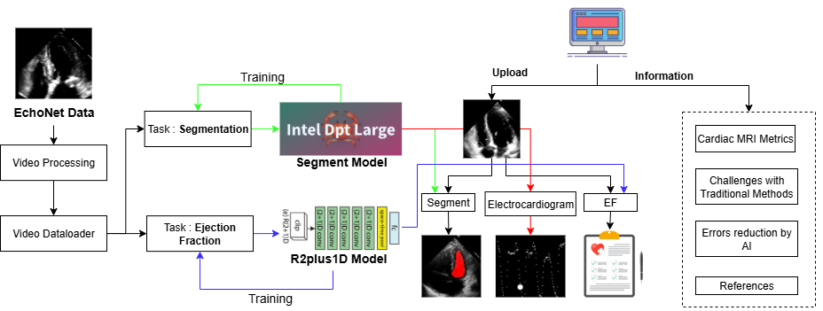

Projects
Here are some of the research and engineering projects I have worked on. These span medical imaging, computer vision, and multimodal AI systems. Click on project titles for more details.

CardioLens: Comprehensive Cardiac AI Analysis Platform
An integrated AI-powered cardiac analysis platform for echocardiogram view classification, ejection fraction estimation, cardiomyopathy detection, and CTA-based coronary segmentation. Developed for the Intel AI Hackathon at IEEE INDICON 2024.

RefYOLO-HuMaR: Referring Expression Human Detection
A referring expression grounding framework for human-centric visual understanding. RefYOLO-HuMaR combines YOLO-based detection with language grounding for precise localization of humans based on natural language descriptions.

CIPS-Net: Multi-Task Dense Perception
Cross-Layer Instance-Prototype Similarity based feature aggregation for multi-task perception. A novel approach to dynamically weight multi-scale features for autonomous driving tasks including semantic segmentation, depth estimation, and surface normal prediction.

Intelligent Document Processing with Vision-Language Models
An end-to-end document understanding pipeline leveraging vision-language models for structured data extraction from diverse document types including invoices, forms, and reports. Integrates OCR, layout analysis, and LLM-based information extraction.

CheX-Classification: Multi-Label Chest X-Ray Analysis
Multi-label classification model for detecting 14 thoracic pathologies from chest X-rays using DenseNet and attention mechanisms. Trained on CheXpert dataset with class imbalance handling and uncertainty-aware predictions.

Thyroid Nodule Segmentation in Ultrasound Images
U-Net based segmentation model for accurate delineation of thyroid nodules in ultrasound images. Addresses challenges of low contrast, speckle noise, and variable nodule morphology with attention-guided feature refinement.

BLoRA: Efficient Fine-tuning for Vision Models
Block-wise Low-Rank Adaptation for efficient fine-tuning of large vision models. BLoRA introduces selective layer adaptation strategies that reduce training parameters while maintaining competitive downstream task performance.